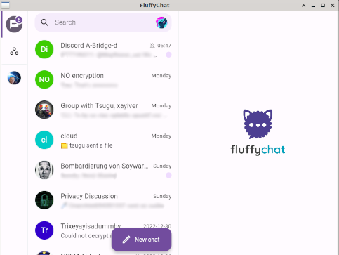

What is matrix?
Matrix is the email of chat apps. Anyone can host their own server, just like you can host your own email. But all of the servers can talk to each other.
How to use it?
- Install one of the available clients, just like you would install thunderbird if you wish to access your mail. (I recommend Fluffychat and Schildi Chat) 
- Create an account on one of the homeservers. This will be your service provider, like gmail or yahoo
- Add me by typing in my contact info, tsugu:thishorsie.rocks(optional)